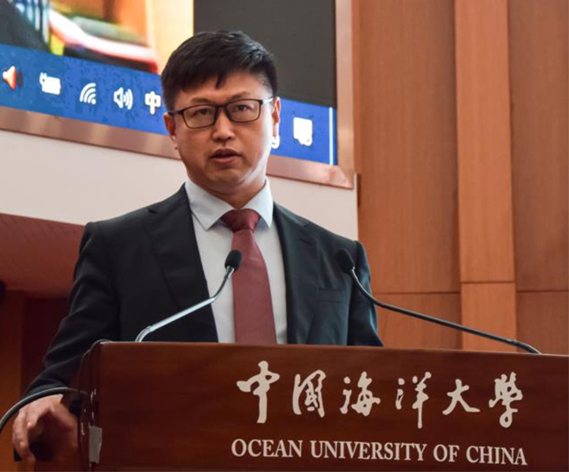

新闻动态
更多- 2026-06-10 董军宇：深耕深蓝育桃李，匠心筑梦启新程
- 2026-05-09 山东省科学院海洋仪器仪表研究所访问学部
- 2026-05-01 海大信息学部新增2个本科专业
- 2026-04-28 山东卫视报道董军宇教授团队成果实现产业化
- 2026-04-26 爱特工作室举办国产信创计算机与网络技术展
- 2026-03-25 青岛新闻报道董军宇教授团队成果
- 2025-11-13 今天，部长给我们上课！
- 2025-11-06 信息学子在第十九届“挑战杯”竞赛获佳绩
- 2025-11-06 信息学子在“华为杯”第七届中国研究生人工智能创新大赛获佳绩
- 2025-09-15 中国海洋大学人工智能学院成立暨揭牌仪式举行
- 2025-06-20 董军宇教授在海大2025届本科生毕业典礼上的发言
- 2025-06-12 《智能海洋技术与系统（英文）》被EI数据库收录
- 2025-06-03 “如何成为科研达人分享会”成功举办
- 2025-05-28 《智能海洋技术与系统》第一届编委会第二次会议召开
- 2025-05-27 海大学生分会和爱特工作室代表参加YEF2025
- 2025-05-08 研究院2025届硕士学位论文答辩会圆满举行
学术推介
更多- 2026-06-30 中国计算机大会（CNCC）2026邀请函
- 2026-06-29 IWAIT 2027 Call for Papers
- 2026-06-20 首届 IEEE 亚太地球科学与遥感研讨会通知
- 2026-06-10 第十届全国成像光谱对地观测学术研讨会通知
- 2026-06-06 中国多媒体大会2026开放注册
- 2025-05-30 “AI+X高校行Agent专题”活动来袭
- 2025-05-13 第二届全国信息地理学大会通知
- 2025-05-13 高光谱遥感信息处理与应用研讨会通知
- 2025-04-09 第二届人工智能与遥感科学交叉论坛
- 2025-04-05 第四届极地海洋与全球变化国际学术研讨会通知
- 2025-04-05 2025年山东省计算机教育大会通知
- 2025-03-15 2025年遥感青年科学家沙龙通知
- 2025-02-26 第九届全国积雪遥感学术研讨会
- 2025-02-12 CCIG 2025注册开启，5月长沙共襄图象图形盛会
- 2025-02-04 第四届人工智能海洋学论坛通知
- 2024-09-20 第六届“城市遥感”学术研讨会

院长寄语：中国海洋大学人工智能研究院有信心建成世界一流的海洋人工智能学科，助力学校的“双一流”建设，为新时代人工智能发展作出贡献！真诚希望每位同学用智慧、勤劳和诚信的品格去谱写人生优美的乐章，我们将用热情、知识和力量...